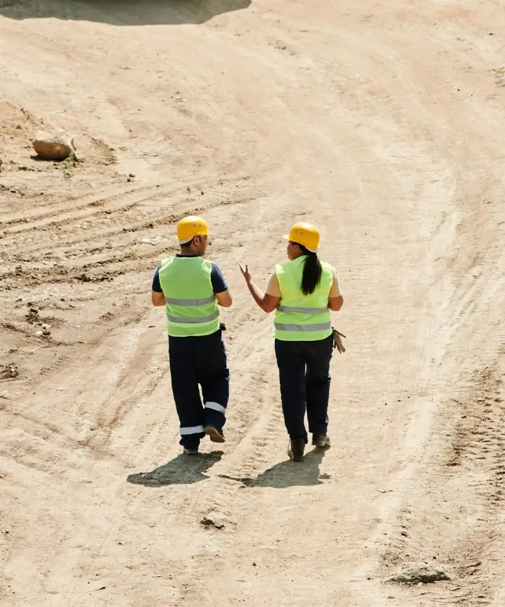
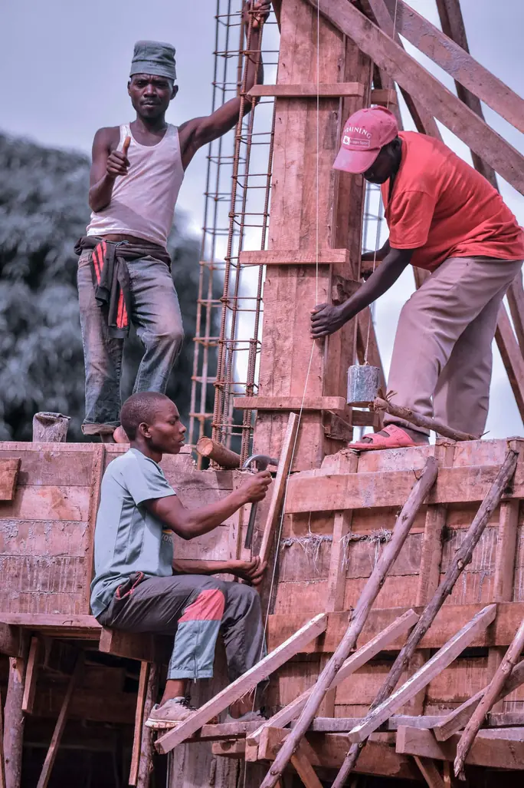

2018

One spreadsheet, one site engineer
Marcus started project management out of a shared spreadsheet, tracking site consultations by hand for eleven clients he called every week.
11 clients, tracked by hand
We started Stackly because too many good developers were running client follow-ups nobody was watching. Seven years later, that's still the whole pitch — a site engineer who's actually paying attention.



Marcus started project management out of a shared spreadsheet, tracking site consultations by hand for eleven clients he called every week.
11 clients, tracked by hand
We took the weekly check-in model online — the same close project management, minus the requirement to be in the same city.
Weekly check-ins, online
Added site progress modeling and structured planning, so "project health" became a number we could actually show you, not a feeling.
Project health, measuredStill capped client-per-supervisor ratios on purpose. We'd rather turn people away than let project management quality slide.
640+ clients, 9 managersEvery site engineer at Stackly caps how many clients they'll take on. It means we say no more often than we'd like — and it means the clients we do take on get seen, every single week.


A good project routine keeps moving even on the weeks you don't feel like it. We build the process so willpower isn't the thing holding your growth together.

A dashboard that flags your numbers isn't a site engineer. Every client gets a real human checking their project plan and their week, every single week.
We measure, we re-measure, and we tell you the real number — even when it's not the one you wanted to hear that month.
Construction-operations professionals with formal certification lead our project-pathway design.
Compliance-trained staff handle data handling, so your client records stay clean the first time.
Complex, compliance-heavy projects are handled by staff trained for it.
Site managers review each other's project plans every quarter, so no plan is made in isolation.

Sets capacity plans and growth targets for every developer, across new clients and expansion.

Builds our milestone playbooks and project pricing, and owns clients from first consultation to closure.

Keeps client records and regulated data compliant, from data handling to audit trails.

Runs onboarding and adoption tracking, so the first 90 days are as tracked as the first call.